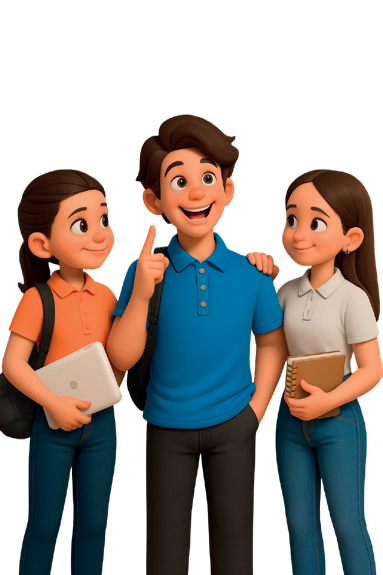

Acción
por el clima
Promover la comprensión y argumentación crítica sobre distintas teorías del origen de la vida mediante
investigación, debate, ilustración y síntesis colectiva, que fomenten la competencia
científico-técnica.
Un debate es una discusión organizada en la que al menos dos personas o grupos
presentan y defienden diferentes puntos de vista sobre un tema específico, generalmente controvertido. Su
objetivo es explorar en profundidad el tema, analizar argumentos, considerar diversas perspectivas y
persuadir a una audiencia o jurado sobre la validez de una postura. Se utiliza en contextos educativos,
políticos, judiciales, mediáticos, entre otros.
- Hoja de papel bond
- Cartulina A3
- Esfero azul
- Cronómetro
- Acceso a Internet
- Cuaderno de apuntes
- Computadora

- Formen equipos y divídanlos en dos subgrupos, A y
B, procuren que tengan la misma cantidad de integrantes.
- Elijan dos teorías para el debate. Por ejemplo: abiogénesis química vs. panspermia, o
abiogénesis vs. creacionismo.
- Investiguen sobre la teoría asignada utilizando fuentes confiables, como libros
especializados o sitios web académicos.
- Elaboren una ficha donde recopilen: los principales postulados, evidencias experimentales e
históricas, fortalezas y críticas relevantes.
- Creen un póster o resumen visual sobre su teoría en una cartulina.
- Preparen una exposición oral de máximo tres minutos. El subgrupo
A presenta su teoría, y luego el subgrupo
B ofrece una contrargumentación de un minuto. Después, cambian roles:
B expone y A refuta.
- Cada equipo completo, discutan los puntos fuertes y débiles de ambas teorías, y
elaboren un póster comparativo que incluya: una tabla de ventajas y desventajas, evidencias
clave y una conclusión provisional.
- Un representante del equipo presenta el póster y la conclusión final. Luego, se abre una
breve sesión de preguntas (2 a 3 minutos) por parte de otros equipos.
- Finalmente, cada estudiante escribirá en su cuaderno una reflexión individual sobre:
- Qué teoría considera más válida y por qué.
- Cómo cambió su perspectiva tras el ejercicio.
- Qué aprendió al defender una posición contraria a la suya.
Evalúa tu trabajo según los criterios y completa la tabla.